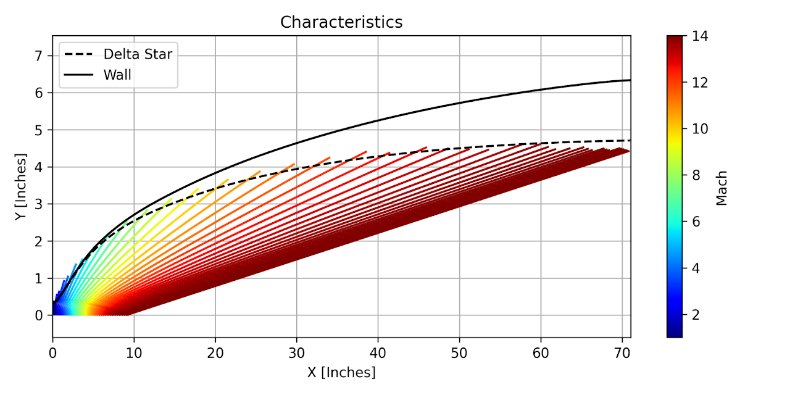
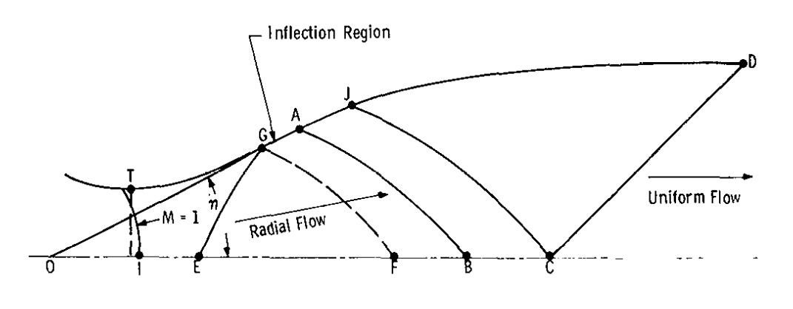
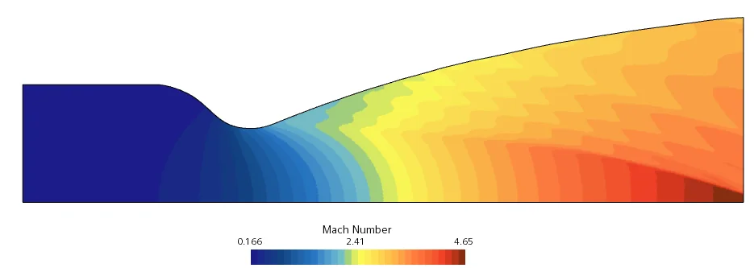
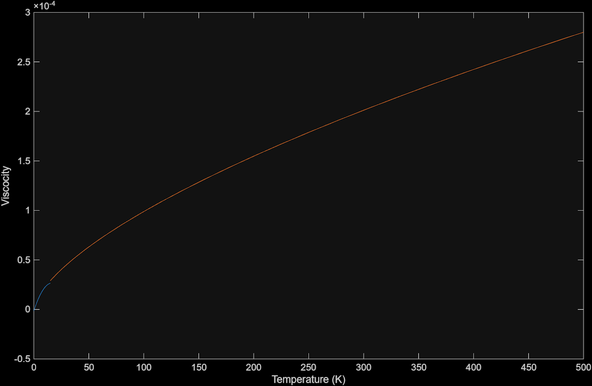

Technical Analysis
Flow Analysis
Three complementary methods — Method of Characteristics, CFD, and helium thermodynamic modeling — work together to design and validate the nozzle contour.
Method of
Characteristics
The MOC is the primary tool for designing the nozzle wall profile. It converts the governing partial differential equations for supersonic flow into ordinary differential equations along characteristic lines — curves along which pressure disturbances propagate through the gas.
The method applies to two-dimensional, supersonic, steady, inviscid, and irrotational flow of ideal helium. Only the diverging section is designed by MOC; the converging section is assumed to deliver a uniform sonic condition at the throat.
Characteristic line intersections are used to cancel Mach wave reflections, producing a shockless, uniform exit flow at the design Mach number of 14.
Validation result: The Python MOC implementation generated contours showing remarkable similarity to CFD results across the Mach 6–14 operating range, confirming the analytical approach.

Characteristic lines, wall contour, and boundary layer displacement (\(\delta^*\)) — MOC output

Nozzle flow region schematic — Sivells (1978). Showing throat (T), inflection region (G), radial flow, and the uniform exit flow zone (D). The MOC solver follows this region structure.
Three steps to a
shockless contour
Set the Exit Condition
Choose M_exit = 14 and compute the maximum expansion angle θ_max = ν(M_exit)/2 using the Prandtl-Meyer function for helium.
Trace Characteristic Lines
Project left- and right-running Mach waves from the throat. At each intersection, enforce flow-turning and continuity to find local Mach number and wall angle.
Cancel Wave Reflections
The wall is shaped so each incident Mach wave arrives at zero reflection angle — canceling it and producing uniform parallel flow at the exit plane.
CFD via ANSYS

CFD Mach number contour — nozzle cross-section. Blue (M ≈ 0.17) at inlet expanding to red (M ≈ 4.65) at exit. Full Mach 14 simulation uses helium properties at operating conditions.
CFD via ANSYS was used to verify the accuracy and performance of the MOC nozzle contour. While the MOC code provides a theoretical shock-free design based on simplifying assumptions, CFD allows for detailed analysis of real flow behavior — viscous effects, boundary layer growth, and potential flow separation. By comparing CFD results with the MOC-generated contour, the team evaluates flow uniformity, Mach number distribution, and the presence of any residual shocks or expansion waves.
The simulations specify ideal air as the working fluid with symmetry applied where applicable, and mesh refinement concentrated near walls, the throat, and expansion regions to ensure accuracy in high-gradient zones.
Analysis objectives
| Mach distribution | Validate M = 14 at exit |
| Flow uniformity | Check parallel exit flow |
| Shock structure | Detect residual Mach waves |
| Boundary layer | Quantify displacement thickness |
| Flow separation | Identify detachment risk |
Turbulence model — k-ω SST: Selected for accurate prediction of adverse pressure gradient boundary layers and flow separation, which are critical in highly expanded supersonic nozzle flows.
Boundary conditions
| Inlet total pressure | 1 – 10 MPa |
| Inlet total temperature | 3,000 K |
| Inlet flow direction | Axial |
| Outlet static pressure | 101,325 Pa |
| Wall — thermal | Adiabatic |
| Wall — velocity | No-slip |
| Turbulence model | k-ω SST |
| Fluid | Ideal air |
| Domain type | 2D axisymmetric / 3D |
| y⁺ target | ≤ 1 (wall-resolved) |
Mesh refinement is concentrated at the throat, wall boundary layer, and diverging expansion section to ensure solution accuracy in the high-gradient regions of the compressible flow field.
Helium
characterization
Accurate thermodynamic and transport properties of helium are essential inputs to both the MOC solver and CFD — particularly at the cryogenic and high-enthalpy extremes of the operating envelope. Real-gas equations of state are used rather than ideal-gas approximations to capture the behavior of helium at high density.
Helium vs. Air — key properties
| Property | Helium | Air |
|---|---|---|
| γ | 1.667 | 1.400 |
| R (gas constant) | 2077 J/kg·K | 287 J/kg·K |
| c_p | 5193 J/kg·K | 1005 J/kg·K |
| Liquefaction temp. | 4.2 K @ 1 atm | 77 K (N₂) |
| Speed of sound @ 300 K | 1020 m/s | 347 m/s |
Viscosity is modeled via a power-law curve fit calibrated at low temperatures, where helium deviates from the Sutherland law. The blue curve shows tabulated data; the orange curve is the fitted model.

Helium viscosity curve fit — tabulated data (blue) vs. power-law model (orange)